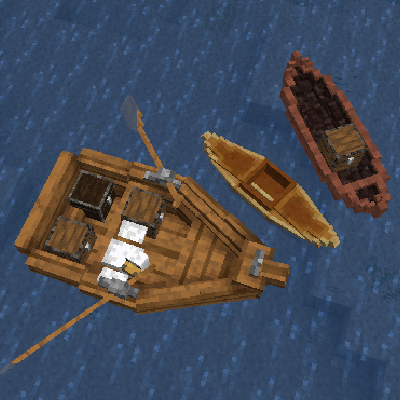
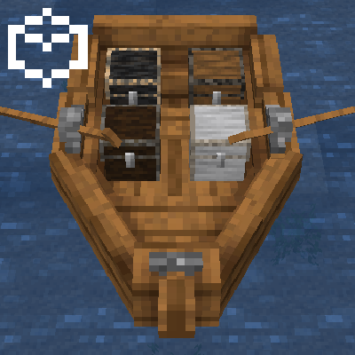
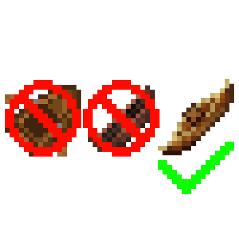
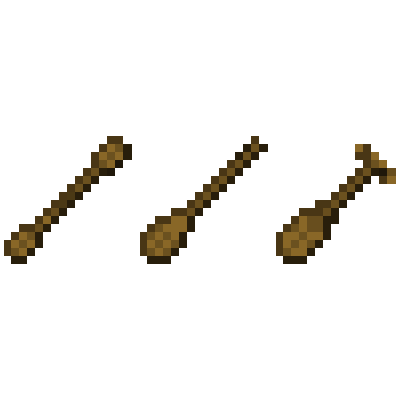
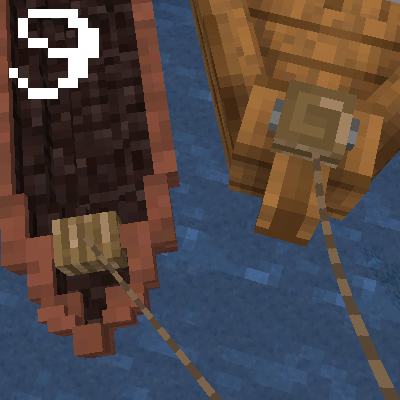

1.20.1 / (Addon) Firma: Civilization / Getting Started: Boats
Creating and using a boat may be slightly more involved than you're used to, but there's nothing quite like building the perfect craft and setting off on the high seas. Peruse this manual and learn the ins and outs of carving, crafting, constructing, rowing, paddling, piloting, and customizing to your delight.
Travelling the world, or just your locality, is often best done by navigable waterways.
You can add blocks to boats! As if you're placing a block on land, press Right Click while holding a chest, an anvil, or a workbench, to add it to the boat. Press Right Click to access them. If you can't place a block in a particular place, that's probably because it's the pilot seat! You can't pilot the boat if there's a block in the way! You can remove the blocks by breaking them, like normal.
They don't exist! With the exception of the kayak, if you break a boat, it will only drop some of its ingredients! This means you'll need a kayak if you want to carry a boat over land, and it also means you might want to build a dock for your larger vessels.
Like always, you can move animals around using boats! However, be aware that larger animals, like horses, will only fit in boats that are big enough. If an animal is riding a boat and is in your way, you only have to crouch and press Right Click to eject it from the boat. Animals will get restless after 2 days in the boat and will leave the boat on their own in 3 days.
Each boat has a specific seat that you need to be riding in order to control the boat.
If you feel like your boat is moving slowly, double check that you're holding the appropriate paddle item, or, if your boat requires oars, that the oars have been equipped to the oarlocks. In some boats, multiple players are able to paddle or row to make the boat go faster.
Most boats have at least one cleat on them. You can attach a lead to the cleat and use it to pull the boat. You can pull boats up onto the shoreline and up slabs.
